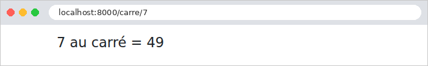
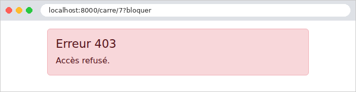
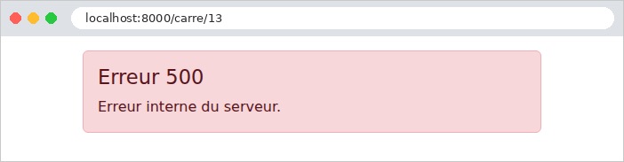

7. The Lifecycle of a Request
Between the arrival of a request and the dispatch of its response, [Laravel] goes through several stages, and the application can intervene at each one. We’ve already encountered several of these: middleware (examples 03, 12, 16, 22), route parameter binding (example 12), and exception handlers (examples 08 and 12). This chapter brings them together in a single example, which displays a message in the console at each step so you can observe their order:
- 1 and 7. Global middleware, executed for all requests, even before routing. A middleware component wraps the rest of the processing: it sees the request pass through before it and the response after it (example 03). [Laravel] installs several by default (empty strings become [null], maintenance mode, requests become CORS...), in the order of the global middleware list;
- Routing. [Laravel] searches for the route that matches the URL and the method. If none match, a [NotFoundHttpException] exception is thrown (404);
- The group and route middlewares, in order: first those of the [web] group (cookies, session, form errors, anti-CSRF protection, parameter binding), then those of the route. One of them, [SubstituteBindings], binds the route parameters (2, example 12). The route middleware (3 and 4) is the right place for checks specific to certain actions: this is how the [auth] middleware in the next chapter works. If one of them returns a response without calling [$next] (or throws an exception), processing stops there: the action is not called;
- 5. The action, and the view it generates;
- 6. The end of the middleware chain, in reverse order: each component receives the response from [$next], can modify it (add a header or a cookie), and must return it;
- 8. The [terminate] methods of the middleware components that have one, executed after the response is sent to the browser. They can no longer modify the response: they are used for processing tasks that can wait (writing a log, sending statistics, etc.), without making the user wait;
- x. Exception handlers: An exception thrown by a middleware component, an action, or a view is passed to the handler ([render], in [bootstrap/app.php]) registered for its class, which constructs an error response. This response is then passed back up through the middleware components, just like a regular response.
This is equivalent to the filters in [Java] and the interceptors in [Spring MVC], the action filters in [ASP.NET Core MVC], and the functions [before_request] / [after_request] from [Flask]. The distinctive feature of [Laravel] is that almost everything in it is middleware: the same concept is used to process all requests (global middleware), a family of routes (groups), or a few routes.
7.1. Example 24: The steps in processing a request
The application has only one action, which calculates the square of an integer: [/carre/7]. Depending on URL, it either succeeds or fails in various ways. Messages are written to the server console by the [error_log] function of [PHP], which is displayed by the [php artisan serve] command.
7.1.1. The global middleware: app/Http/Middleware/Journal.php
- lines 16–17: the middleware displays the request ([getRequestUri()]: the path and parameters). This is message #1: nothing has happened yet in [Laravel], not even routing;
- line 19: the rest of the processing takes place within this call;
- line 20: message #7, once everything else has been completed. [getStatusCode()] is the response code.
A global middleware does not know the chosen route, since routing has not yet taken place. It is used for processing that applies to all requests: logging, compression, and handling a proxy (the [TrustProxies] middleware from [Laravel] corrects the client’s address when the application is located behind a proxy server; the case study discusses this in relation to the clients’ IP address).
7.1.2. The parameter mapping: routes/web.php
- lines 12–16: [Route::bind] registers an explicit binding: any route parameter named [{entier}] passes through this function, which receives the text from URL and returns the value that the action will receive. It accepts any text and converts it to an integer, or to [null] if it is not one: unlike [whereNumber] (Example 02), which would return a 404 page for [/carre/abc], here it is the action that will decide. It displays message #2. This is the other form of the route binding from Example 12, which bound a parameter to a class ([UrlRoutable]);
- Lines 19–20: The route, named [carre], has two route middlewares, which will execute in that order, after those in the [web] group.
7.1.3. The route middlewares: Bloquer.php and Chrono.php
- Line 16: Message No. 3. A route middleware knows the selected route: [$request->route()] returns the route, and [getName()] returns its name;
- Lines 17–19: The parameter [?bloquer] of URL ([has] checks for its presence) causes a 403 error (*Forbidden*, access denied): [abort] throws an exception, which interrupts processing.
- lines 15–18: message #4, and the start time, stored in the request attributes (example 12). [hrtime(true)] is a precise clock, in nanoseconds, designed to measure durations;
- Line 20: Message No. 6, after the action, with the response code;
- Lines 26–34: the [terminate] method, called by [Laravel] after the response is sent, with the request and response: message #8, with the time elapsed since message #4. [Laravel] calls it for all middleware components in the route, even if they have not been executed (when a previous middleware component interrupted processing): the check on line 30 verifies that the measurement has started.
7.1.4. Error handling: bootstrap/app.php
- line 19: [prepend] places the global middleware at the top of the list: it runs before all others and sees the response after all others;
- Lines 23–27: An exception handler for the [DomainException] class (and its subclasses; see Example 08): an “unexpected” error is converted into a custom error page with status code 500 (*Internal Server Error*). The exception message is displayed in the console, but not on the page: it may contain internal details that are not relevant to the user;
- lines 30–33: a handler for all HTTP errors. [abort(400)], [abort(403)], a URL for a missing route (404), a forbidden method (405): all of them throw an exception that implements the [HttpExceptionInterface] interface from [Symfony], and which contains its code ([getStatusCode()]). This single handler therefore replaces all English-language error pages from [Laravel] with ours.
[Laravel] passes an exception to the first handler whose parameter type matches it. An exception that has no handler becomes a 500 error: in debug mode, this is the detailed page (example 03); without debug mode, it is the standard 500 error page. There is another, even simpler way to replace error pages: a view named [resources/views/errors/404.blade.php] replaces the 404 error page, and the same applies to every error code (Example 26 uses this approach). The [render] handlers, on the other hand, allow for any type of handling: a log message, a JSON response, a redirect...
7.1.5. The controller and the error page
- Line 13: The parameter [$n] receives the value bound by [Route::bind]. [Laravel] does not pass a parameter bound to [null] to the action: the action’s parameter therefore has a default value, [null], which will be its value in this case;
- line 17: a parameter that is not an integer: error 400;
- line 20: the number 13 causes an “unexpected” error. [DomainException] is an exception class from the standard library of [PHP];
- line 22: the normal case.
The error page receives the error code and displays an appropriate message. The [@switch] directive selects a block based on a value: [@case] specifies a value, [@break] ends the block, and [@default] handles the other values. The view [calcul/resultat.blade.php] simply displays the result.
7.1.6. Execution
The normal case, [/carre/7]:

The server console displays the eight steps, in order:
The last line is the development server log, written once the request is complete. A blocked access, [/carre/7?bloquer]:

The first route middleware threw an exception: the second middleware and the action were not executed. The error response, generated by the handler, is passed up to the global middleware. [terminate] was called but did not display anything, as the measurement did not start. A parameter that is not an integer, [/carre/abc]:

This time, the action was called with [null] (which is rendered as an empty string: [carre()]), and it was this action that raised the 400 error. An “unexpected” error, [/carre/13]:

The exception was handled by its handler: the user sees the "custom" error page, not the detailed page, even though debug mode is enabled. The exception is still logged in the [storage/logs/laravel.log] log: [Laravel] distinguishes between an exception report (*report*, its entry in the log) and its rendering (*render*, the response). Finally, a URL that does not correspond to any route, [/inconnu]:
Routing failed: no connection, no route middleware, no action. The 404 page is ours:
Let’s focus on the essentials. Route middleware is the right place for checks common to many actions (is the user logged in? Do they have permission to access this action?): the next chapter uses it for authentication. Exception handlers and views ([errors/...]) ensure that the user never sees a technical page, regardless of the error: the case study takes advantage of this.